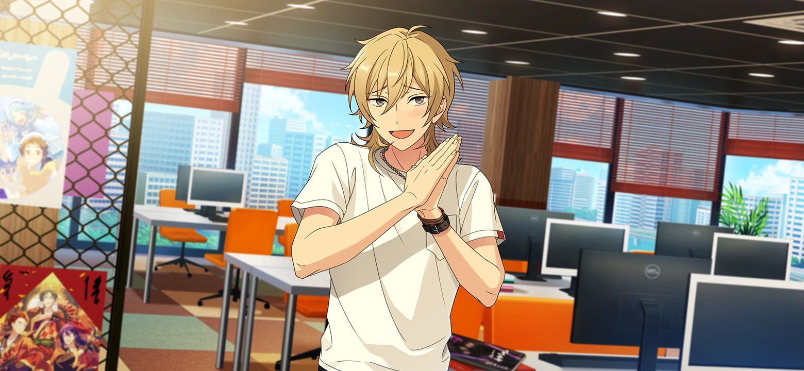
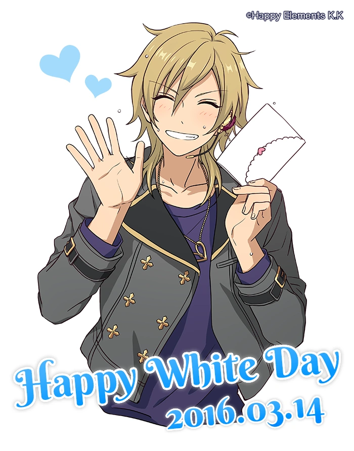

Kaoru Hakaze
"We help each other when we need it, give-or-take."
Kaoru Hakaze is an idol in the unit UNDEAD, alongside Rei, Adonis, and Koga. He's known for his easygoing nature as well as his flirtatious image. Though Kaoru initially became an idol to become popular with girls, and he spent most of his school life shirking work, he has since become reliable and serious. He's been involved in a variety of activities, including ice skating, sports biking, and acting in romantic dramas. He's in the BIBLION (book-reading) and OCEANS (marine biology) circles.
His passion for the ocean comes from his late mother who was a marine biologist. Her death is something that troubles him for a long time, and he has a tendency to become emotional about his family. On the other hand, he doesn't get along with his father and feels guilty for leaving familial duties to his older brother and sister (notably, one arc title in First Dreams 2 refers to him as "A Good-for-Nothing Son"). Even so, he puts in an effort to help out and fulfill his responsibilities.
Being friendly and outgoing, he's able to get along with a large variety of people, including Kanata Shinkai and Chiaki Morisawa.
He is voiced by Kei Hosogai and played by Chihiro Okutani in the stage plays.
Birthday: November 3rd
Age: 18-19
Height: 178 cm / 5'10"
Blood type: B
Specialty: Discerning the scent of girls (I don't know why either I'm sorry)
Solo: Feather Heartache
Signature:
Facts About Kaoru
- His favorite food is pancakes with ice cream and syrup!
- According to official art, he owns at least three surfboards.
- As of Bride Light, he knows the acoustic guitar.
- He has lifeguard training from part-time jobs.
- The Hakaze family is well-off and influential in the area, and they're important enough to know the Tenshouin, Himemiya, and Suou families.
- He's read shoujo manga to get closer to girls.
- His voice actor is fluent in English.
- From the English Ensemble Stars Wiki, "The word 薫風 (read kunpū or kaorukaze) is a seasonal word used in Japanese poetry associated with early summer. It means 'a gentle wind with the fragrance of new, green leaves.'"
- He used to be an honors student before high school.
Official Art and Animations

Favorite CG
I don't even know how to describe how much I love this card I'm just really enamoured with it. I love phantom thieves and I love Kaoru and finding out about this image was like Happy Elements decided to personally snipe me
Editing this to say I got him in a single 10-pull when Fake Phantom Thieves came to Engstars and couldn't stop bouncing around for like a solid hour afterward
Personal Feelings
My first real introduction to Kaoru was the Date Plan event story in early !! era. This was before I was interested in Rei or UNDEAD, and I hadn't watched the anime or really read any ! stories yet, so my meeting his character was completely fresh. I wasn't particularly invested in him, but he struck me as an interesting character. The story tells us about Kaoru's insecurities being the leader of a project as well as his shift from being a careless playboy to a more serious idol; he learns a lot from the people around him, and ultimately he is able to help his teammates and lead the project to success. It's a truly honest, earnest story that was really fun to read. Kaoru's struggles with reinventing himself touched my heart, and I think his somber realization that he never really understood girls or honestly tried to relate to them is fitting for his growth as a person.
Going on to read ! stories featuring Kaoru was... rough. I'm not really a fan of the womanizer type of character, and his disregard for work and his unitmates was sort of annoying to witness. Rei makes an effort to reach out to Kaoru out of the desire for an equal work partner, but they never really connect during this era and Rei is left to wonder how exactly he is meant to interact with Kaoru. But I got used to it since they're in the same unit and I wanted to devour all the Rei content I could.
I guess that over time, all this reading made me appreciate the character he is in the current era. The difference is like night and day with him, and I was a little impressed by how much development he went through between years. I think it wasn't until the Whisper of Spring story that I understood his charms as a character; seeing his interactions with Izumi and the others—how dorky and funny and human he could be—was a genuinely enjoyable experience for me. Like, "ah, this is who Kaoru is." It made me want to get to know him better as a character.
...Which is a lot to say that I ended up wholeheartedly loving him and being a really big fan of him. I wouldn't say that I feel about him the same way I do about Rei, but that doesn't make him lesser either. On the contrary, Kaoru is a wonderful character with a lot of heart and emotion that deserves to be appreciated for all his good qualities. I like the way he cries easily when it comes to his family and the way he tries so hard to be cool around his crush but is really best when he's having fun and being himself with his friends. I feel for him a lot when he struggles to cope with family expectations and loss, even to the point of seeking affection from strangers. Basically I think he's really cool and I love him :]
